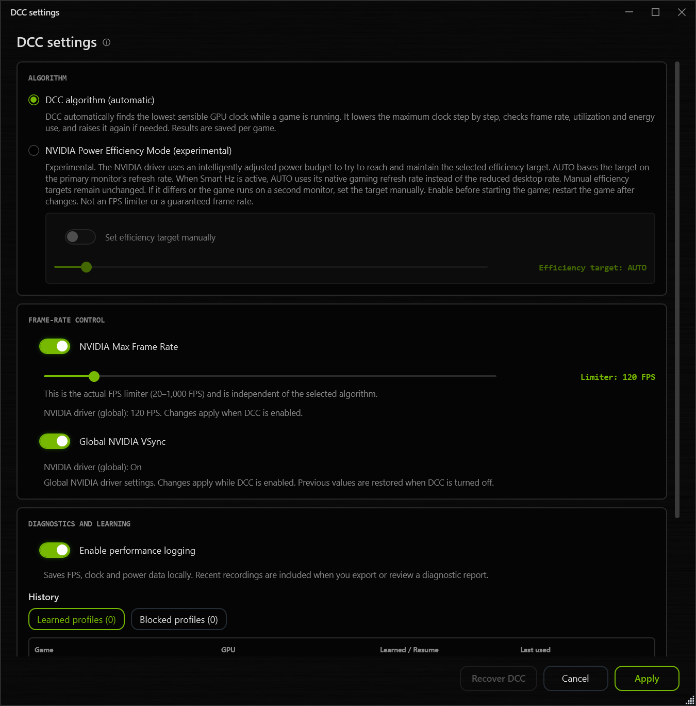
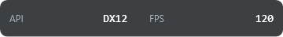
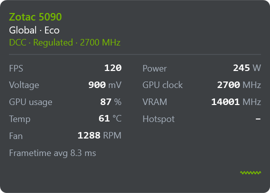

UPDATES UND ENTWICKLUNG
Play-Neuigkeiten
VERÖFFENTLICHUNG GEPLANT: 18.10.2026
NV-UV Play v2.1.3
NV-UV Play v2.1.3 ist für den Abend des 18.10.2026 geplant. Diese Änderungen sind bereits umgesetzt:
- Messwerte im Overlay: Die Bezeichnungen wurden überarbeitet und lassen sich direkt in der Auswahl und in der Vorschau bearbeiten. Eigene Namen können wieder auf die Standardbezeichnung zurückgesetzt werden.
- Celsius und Fahrenheit: Temperaturen lassen sich in der gesamten App wahlweise in °C oder °F anzeigen. Das Overlay übernimmt die App-Einstellung oder verwendet auf Wunsch eine eigene Einheit.
- Overlay und G-Sync: Die Suche nach dem Fehler, bei dem das eingeblendete Overlay auf betroffenen Systemen G-Sync deaktiviert, läuft weiter. Eine Behebung ist noch nicht bestätigt.
NV-UV PLAY v2.1.2
DCC-Profile behalten, Grafik-API im Blick
DCC speichert gelernte Profile wieder zuverlässig und kann sie beim nächsten Spielstart übernehmen. Dazu kommen die Grafik-API im Overlay, ein verbesserter Frametime-Graph und die automatische Bereinigung alter Updates.
Beispiel: ein vorhandenes 120-FPS-Limit
Ist global im NVIDIA-Treiber ein Limit von 120 FPS gesetzt, zeigt DCC diesen Wert an. Das gilt auch für die globale VSync-Einstellung. Änderungen über DCC gelten während der Nutzung; beim Ausschalten wird der vorherige Treiberzustand wiederhergestellt.

Beispiel: die Grafik-API einblenden
Öffne Overlay settings → Readings und aktiviere Graphics API. Position und Farbe lassen sich wie bei den anderen Readings anpassen.

Die Anzeige umfasst DirectX 8, 9, 10, 11 und 12 sowie Vulkan und OpenGL. Die Erkennung hängt vom Spiel und Darstellungsmodus ab. Bei uneindeutiger DirectX-Zuordnung bleibt DXGI stehen. Die OpenGL-Erkennung ergänzt keine FPS-Erfassung.
Messwerte nach deinen Vorstellungen
Ein Overlay kann Messwerte in zwei Spalten und den Frametime-Verlauf darunter zeigen. Der Graph wurde verbessert. Layouts lassen sich weiter individuell zusammenstellen und speichern.

Wenn ein Spiel nicht erkannt wird
Prüfe, ob es in der Game Library steht, und füge es bei Bedarf manuell hinzu. Für die Aufnahme in die gemeinsame Bibliothek gibt es Request a game. Datenbank 2.39 enthält 734 Einträge, darunter Life is Strange, Life is Strange Remastered und Blitzkrieg. Die EXE-Zuordnung von Golf It! wurde korrigiert.
Was mit Update-Resten passiert
Bestätigte fehlgeschlagene Updates werden nach sieben Tagen ohne Änderungen entfernt, sobald eine neuere Play-Version erfolgreich gestartet wurde und mindestens eine Minute läuft. Aktive Updates und unbekannte Dateien bleiben geschützt. Neue Update-Dateien liegen unter ProgramData/NV-UV-Play/Updates; der frühere CurveLab-Updateordner wird mitbereinigt.
DCC nach Änderungen wiederherstellen
Recover DCC kann einen blockierten Zustand nach Änderungen der Treiberumgebung nach Bestätigung und GPU-Prüfung wiederherstellen. Gespeicherte Profile bleiben erhalten. DCC bleibt zunächst aus; die automatische Profilumschaltung pausiert bis zur Fortsetzung. Der Hinweis verweist auf die UV-Profilplätze.
Version 2.1.2 laden
Das Update ist über Updates in Play und als Portable-ZIP verfügbar.
NV-UV PLAY v2.1.1
Patchnotes wieder direkt in Play
Version 2.1.1 behebt die fehlenden Patchnotes in Play nach dem Update. Die vollständigen Hinweise zu 2.1.0 sind enthalten. Alle mit 2.1.0 eingeführten Funktionen bleiben verfügbar.
NV-UV PLAY v2.1.0
Mehr Kontrolle über Profile und deinen Desktop
Seit 2.1.0 dabei und auch in 2.1.1 enthalten: die neuen Funktionen mit aktuellen Bildern und praktischen Beispielen.
Profilwechsel mit Tuning-Werten
Beim Anwenden eines Profils werden dessen Tuning-Werte übernommen. Ein Profil ohne diese Werte stellt die zuvor von Play erfassten Werte wieder her. Das Einschalten von Advanced GPU Tuning allein verändert noch keine GPU-Einstellung.
Blockierte Profile wieder verwenden
Eine nicht unterstützte NVIDIA-Power-Efficiency-Funktion blockiert Play und die Profilanwendung nicht mehr. Die Korrektur berücksichtigt bereits betroffene Nutzer. Ein beschädigtes Startprofil kann durch ein neu ausgewähltes Profil ersetzt werden.
DCC-Erkennung und Diagnose
Die Zuordnung berücksichtigt bei identischen EXE-Namen zusätzliche Spiel- und Pfadinformationen. DCC-Performanceaufzeichnungen sind standardmäßig aktiv und werden begrenzt aufbewahrt. Die Spiele-Datenbank 2.36 enthält 711 Einträge, darunter Lessaria: Fantasy Kingdom Sim (Balanced), ACE COMBAT ZERO (Eco) und ACE COMBAT 8 (Performance).
Programmcache außerhalb von Temp
Entpackte Programmdateien liegen unter LocalAppData. Das Update übernimmt Profile und Windows-Autostart automatisch. Alte unbenutzte Cache-Versionen werden aufgeräumt; die aktuelle und eine vorherige bleiben erhalten. Laufende Play-Versionen bleiben geschützt und können vorübergehend weitere Cache-Ordner benötigen.
ASIC Quality bei Blackwell
Settings → About zeigt bei Blackwell ASIC quality und Core voltage limit in mV. Die Spannungsgrenze wird beim Start gelesen und ist kein fester Stock-VID-Wert.
Beispiel: Desktop → Spiel → Desktop
Wähle dein eigenes Desktop-Profil und ordne einem Spiel Balanced zu. Bei aktivem UV Pilot nutzt Play dein Desktop-Profil bis zum Spielstart, wechselt dann zu Balanced und kehrt nach Spielende zurück. Ein Game override betrifft nur Spiele. Spiele mit No Override behalten ihre eigene Zuordnung.
Beispiel: einen Tuning-Wert ausschalten
Im aktiven Profil stellt Off am Regler oder das Entfernen des Hakens nur diesen Wert sofort auf den zuvor von Play erfassten Zustand zurück. Andere offene Änderungen werden nicht angewendet. Save speichert Off im Profil; Cancel aktiviert den Wert nicht erneut. Der wiederhergestellte Wert muss nicht null sein.
Manuelle Schnellwahl
Hotkeys und Tray-Auswahl aktivieren ein Profil im manuellen Modus. Mit Automatic in Play übernimmt UV Pilot wieder. Für eine kurze Auswahl bleiben belegte Plätze 1 bis 6 der Standard. Include all saved profiles unter Advanced options bezieht weitere gespeicherte Profile ein.
Mehr Platz für die Kurve
Im Curve editor bleibt die Grafik sichtbar, während die Einstellungen separat scrollen. Die unteren Aktionen bleiben auch bei kleinen Fenstern und hoher UI-Skalierung erreichbar. Game override & presets und Advanced options sind ebenfalls kompakter.
NV-UV Play v2.0.16
BEREITS IN NV-UV PLAY v2.0.16
Kurven prüfen und Profile leichter verwalten
- Curve limits: Ein manueller Test prüft niedrigere Kurvenstarts auf geeigneten Blackwell-Desktopkarten. Das Ergebnis gilt für die geprüfte GPU-, BIOS- und Treiberkombination und ersetzt keinen Stabilitätstest.
- Scanner und Import: Zusätzliche Prüfung des RTX-30-/RTX-40-Kurvenlayouts sowie manuelle Übernahme einer Afterburner-Kurve für die ausgewählte GPU. Der Import wendet die Kurve nicht automatisch an.
- Profile und Anzeige: Klarere Aktionen für Nutzung, Bearbeitung und Verlauf; Korrekturen bei gespeicherten Kurven, GPU-Messwerten und wiederholter Overlay-Skalierung.
NV-UV Play v2.0.15
NEU IN v2.0.15
Deine Kurve gezielt gestalten
Wähle im Curve editor deine Zielspannung und den gewünschten Takt. Über den Pfeil neben Flatline oder einen Rechtsklick auf den Button bestimmst du, wie die Kurve angepasst wird.
Erst ansehen, dann anwenden
Flatline erstellt zunächst einen Entwurf. Du kannst ihn prüfen, einzelne Punkte nachbearbeiten und Änderungen mit Undo / Redo vergleichen. DRAFT zeigt an, dass deine Änderungen noch nicht angewendet wurden.
Erst Apply curve übernimmt den Entwurf auf die GPU und speichert ihn im ausgewählten Profilplatz.
Änderungen verwerfen
Mit Discard draft neben Undo/Redo oder im Rechtsklickmenü des ausgewählten Profilplatzes lädst du dessen gespeicherten Stand wieder in den Editor. Auch ungespeicherte Power-Limit-, VRAM- und Tuning-Einstellungen werden verworfen. Die aktiven GPU-Einstellungen bleiben unverändert.
Bestätigung vor dem Überschreiben
Bevor Apply curve ein gespeichertes Profil überschreibt oder einen Preset-Platz ersetzt, nennt Play das betroffene Profil und fragt nach. Gemeinsam verwendete Profile ändern sich auch für ihre verknüpften Spiele und Profilplätze. Das ursprüngliche integrierte Preset bleibt verfügbar.
Für vorübergehenden Stock-Betrieb ohne Überschreiben deiner Profile verwendest du Default.
Passend zur GPU
Manuelle Anstiege benötigen Gradient Lock, bei Ampere zusätzlich die optionale Gradient-Einstellung. Turing verwendet seinen bestehenden Preset-Verlauf ohne manuellen Anstiegsbeginn. Bei Blackwell beginnt die normale Ansicht bei 800 mV; als Anstiegsbeginn sind 850 mV empfohlen.
Neu erzeugte manuelle Flatline-Profile benötigen Play 2.0.15.1 oder neuer. Gespeicherte Kurven bleiben erhalten. Für die korrigierte Berechnung Flatline erneut ausführen, den Entwurf prüfen und anwenden. Prüfe eigene Einstellungen auf deiner Karte auf Stabilität.